A simulação de fluídos é construída com 2 elementos fundamentais e 1 terceiro de grande utilidade: o fluído, o domínio e os obstáculos. O fluído é a malha que vai constituir o líquido (ou seja, se quisermos um líquido vermelho, é o objeto ao qual atribuímos um material de cor vermelha), o domínio é a malha que vai delimitar a área onde existe o líquido, os obstáculos são os objetos que não são atravessados pelo o líquido (por exemplo: um copo, etc.).
1- Aumente o cubo inicial (Cubo1) de modo a ocupar uma larga área do enquadramento da câmara.
2- Introduza um novo cubo (Cubo2), diminua o seu tamanho e coloque-o totalmente dentro do Cubo1, perto do topo.
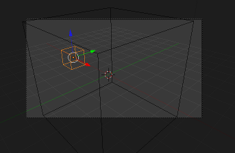3- Selecione o Cubo2, ative o painel de Physics, ative o Fluid e selecione o Type Inflow. Atribua valor 0.200 na Inflow Velocity no eixo X ou Y (depende da sua cena) para o líquido não cair na vertical e descrever um arco (repare nas imagens em cima).
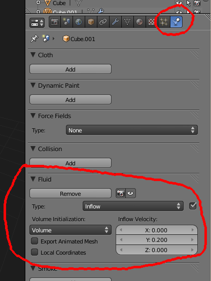4- Selecione o Cubo1, repita os passos mas atribua o Type Domain.
5- No painel de configuração do Domain, altere o valor de End para 10 segundos e clique em Bake para calcular a animação do líquido.
6- Depois de concluído o processo de Bake, pode fazer ALT+A para ver a animação.
7- Deverá ter surgido uma nova malha (o líquido), selecione-a e atribua-lhe um material. Aplique um Smooth (painel de Ferramentas/Tools). Renderize para ver o aspeto.
8- No painel de configuração do Domain, pode melhorar a resolução final do líquido subindo o respetivo valor (inicialmente deverá estar definido para 65) mas tenha em atenção a memória necessária para o cálculo. Se alterar a resolução, faça novo Bake.
9- Depois de estar satisfeito com o fluído, se já não vai fazer um novo Bake, pode enviar o Cubo2 para outro layer, para este não ser visível durante a renderização.
10- Pode renderizar a animação.
a) Crie uma animação seguindo o processo atrás descrito. Depois, na configuração do Domain, ative a opção Reverse Frames e renderize uma nova animação.
b) Altere o Cubo2 de Inflow para Fluid, faça novo Bake e renderize animação. Depois, pode utilizar novamente o Reverse Frames e voltar a renderizar.
c) Na configuração do Domain, experimente outros tipos de viscosidade e alterar a dimensão da simulação (dimensão do cubo que serve de Domain) para obter resultados diferentes.
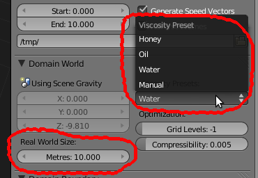d) Introduza outros objetos de Type Obstacle dentro do Domain para interferir com o líquido.
1- Se fizer alterações que afetem a simulação (i.e. introduzir novos obstáculos, redimensionar o domain, etc.) , tem de fazer Bake novamente. Imagine que depois de fazer um Bake decide que afinal pretende um copo mais alto ou cúbico, se alterar a forma do copo e não fizer novo Bake o líquido vai continuar com o mesmo comportamento e ignora a nova forma. É claro que, por vezes, esta possibilidade pode ser útil para criar um efeito especial qualquer. Imagine que coloca um cubo Obstacle que faz com que o líquido altere o seu percurso durante o Bake, se, antes de renderizar, apagar o Obstacle, o líquido vai continuar a comportar-se da mesma maneira, como se chocasse contra um obstáculo invisível...
2- Geralmente, o processo de construção de uma simulação de fluidos segue estes passos:
Criar os objetos e a cena;
Definir o Domain da simulação, onde o fluído existe;
Definir a função dos vários elementos da cena: obstáculos, etc.;
Criar a origem do fluído e suas características;
Bake: calcular a simulação;
Rever e Bake final;
Renderiza animação.
3- Principais parâmetros de configuração:
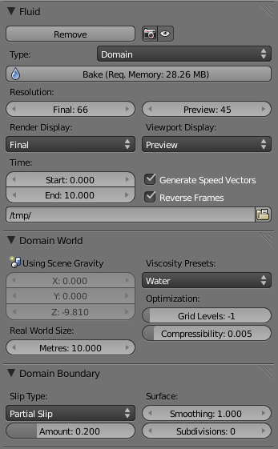O painel Fluid define os limites da existência da simulação do fluído.
A simulação pode ser visível em 3 modos: Final, Preview e Geometry. É possível escolher que modo pretende ver quando renderiza e que modo está visível na janela de 3D. Geralmente, quando renderiza pretende ver a simulação com a qualidade final e na janela de 3D é suficiente ver em qualidade Preview.
A resolução é o principal atributo que define a qualidade (e tempo que demora!) da simulação. Pode definir uma resolução para o Final e para o Preview.
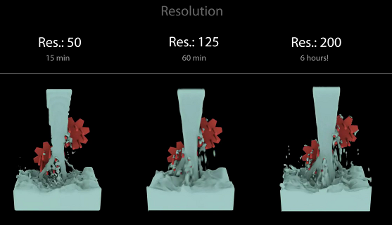O modo Geometry mostra o líquido representado por uma caixa virtual com 6 lados que representa a extensão máxima do objeto.
Time: o tempo de início e fim da simulação. O Start define o início do tempo (em segundos) da simulação na primeira frame, O End especifica o tempo (em segundos) da simulação na última frame.
Se o Start estiver no 0 e o End no 4, se a primeira frame for a 1 e a última a 100, se estiver a trabalhar com 25 Frames Per Second, a sua simulação durará 4 segundos.
Se definir o Start para 2 segundos, o conteúdo da primeira frame da simulação será igual ao que surgiria se a simulação já tivesse começado há 2 segundos. Se definir o Start para 2 (segundos) e o End para 5 (segundos) e a sua animação estiver configurada para durar 250 frames e 25 FPS, a animação que irá obter será equivalente a 3 segundos de simulação em 10 segundos de tempo. Ou seja, o líquido irá comportar-se como se estivesse a ser filmado em câmara lenta.
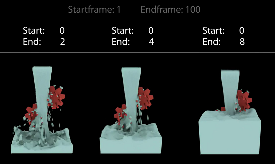Reverse Frames: inverte a ordem das frames. Se já fez Bake e ativar esta opção, quando renderizar a animação o líquido “anda para trás”.
Path: pasta onde irá armazenar os ficheiros de Bake (necessários para renderizar a animação). Estes ficheiros não são eliminados automaticamente mas não os apague antes de renderizar ou terá de voltar a fazer Bake.
No painel Fluid World pode definir valores para a gravidade (terá de desbloquear estes valores no painel de Scene) se não quiser utilizar os valores que correspondem à gravidade do planeta Terra.
Ainda neste painel, pode definir o tipo de viscosidade do liquido (existem alguns líquidos pré-definidos mas é possível definir valores personalizados) e a dimensão em metros do Domain (até um máximo de 10 metros).
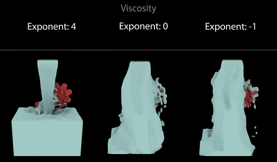 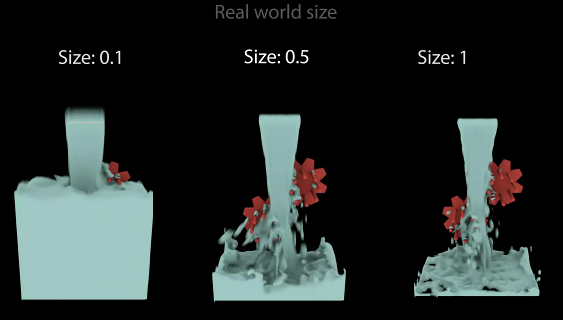No painel Fluid Boundary pode definir o tipo de Slip: No Slip (o limite tem resistência, é “pegajoso”), Free Slip (o limite permite ao fluído mover-se livremente, sem resistência) e Partial Slip (mistura dos outros dois tipos e pode definir o Amount, sendo que 0 é igual a No Slip e 1 é igual a Free Slip).
Neste painel pode ainda definir valores para Subdivisions (permite criar superfícies de líquido com alta resolução e é um valor necessário se quiser gerar partículas) e Smoothing (quantidade de Smooth a aplicar na face do fluído).
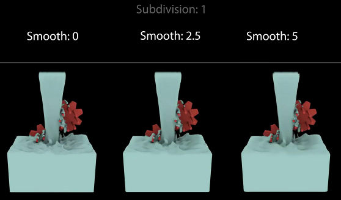No painel Fluid Particles pode definir valores para:
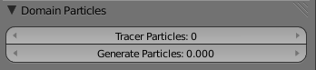Tracer particles: nº de partículas a inserir no início da simulação (para mostrar estas partículas tem de ter outro objeto do tipo Particle). Pense na espuma de uma onda.
Generate Particles: nº de partículas do fluído (0 = desligado; 1= normal; >1 = mais).
Object Fluid: as partes deste objeto que estiverem dentro do Domain serão o fluído.
Volume: funciona só quando a mesh é fechada, o interior do objeto é o fluído.
Shell: funciona também quando o objeto é aberto, as faces são líquido.
Both: funciona só quando a mesh é fechada, combina as anteriores.
Initial Velocity: velocidade do fluído no início da simulação.
Object Obstacle: objeto será utilizado como obstáculo.
Volume, Shell e Both: ver objeto Fluid.
No Slip, Free Slip e Partial Slip: ver acima Domain Boundary.
Impact factor: impacto dos objetos animados (só se aplica a objetos em movimento) no fluído quando colidem.
Object Inflow: Objecto gera fluído (é uma “torneira”).
Object Outflow: Objecto absorve fluído (“ralo” da banheira).
Object Particle e Control serão abordados noutro tutorial.
Para facilitar a configuração básica de diversos efeitos (i.e. Smoke/Fumo, Fluid/Fluído, Explode/Explosão e Fur/Pêlo), foram criados Quick Effects Operators.
a) Selecione o objeto que irá servir de fluído e clique na Barra de Espaços.
b) Escreva Quick Fluid e clique no Enter.
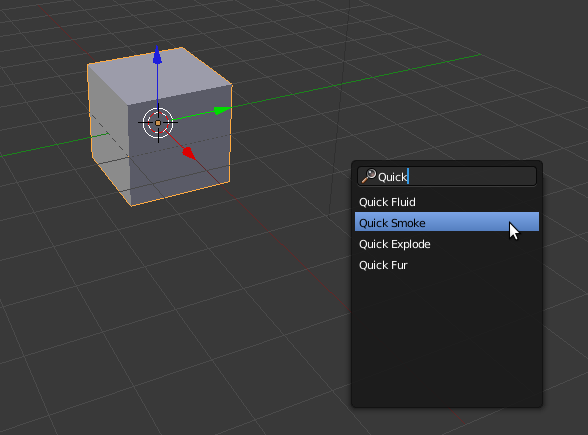